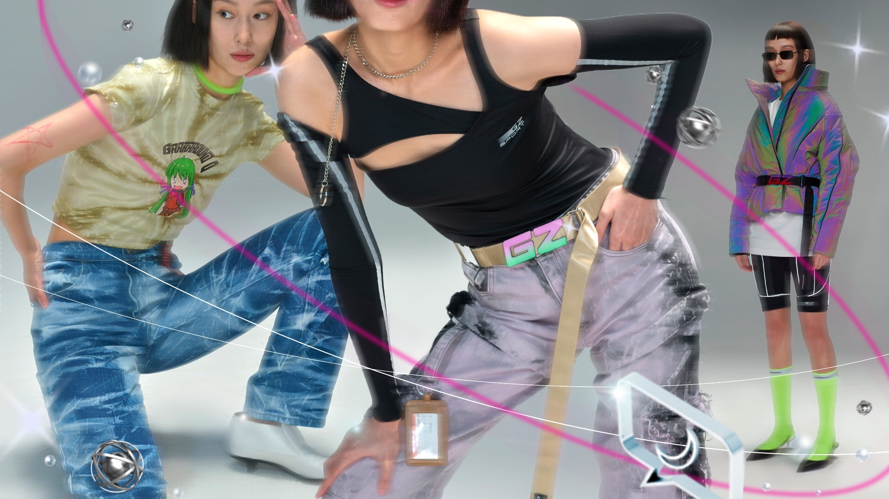
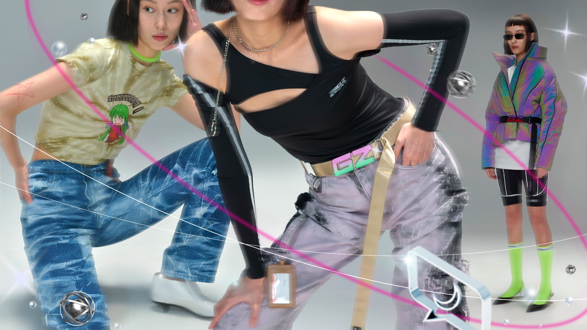

Cyberpunk is a subgenre of science fiction that emerged in the 1980s, characterized by a futuristic, dystopian world where advanced technology is pervasive and often used to oppress and control individuals. The term "cyberpunk" was coined by writer Bruce Bethke in his 1980 short story of the same name. However, the genre was popularized by the works of authors such as William Gibson, Bruce Sterling, and Neal Stephenson.
Films like "Blade Runner" and "The Matrix" drew heavily on cyberpunk themes and aesthetics. As technology has continued to advance, cyberpunk has evolved to incorporate new ideas and concepts. Today, cyberpunk remains a popular subgenre of science fiction, with new works continuing to be produced in literature, film, and other media. Its influence can be seen in everything from video games like 'Cyberpunk 2077, Beneath a Steel Sky, Beyond a Steel Sky' to the fashion and aesthetics of various subcultures.
"Beneath a Steel Sky" is a classic point-and-click adventure game developed by Revolution Software and released in 1994. Set in a dystopian future, the game follows the story of Robert Foster, a man raised by Aboriginal people in the Australian Outback, who finds himself on a quest to discover his true identity and uncover a sinister conspiracy involving a mega-corporation known as "Union City".
Fast forward to 2019, Revolution Software released the long-awaited sequel to "Beneath a Steel Sky", titled "Beyond a Steel Sky". The game picks up years after the events of the first game, with Robert Foster returning to Union City to investigate a new threat that threatens to disrupt the fragile balance of power in the city."Beyond a Steel Sky" builds on the original game's legacy and features updated graphics, improved gameplay mechanics, and a more complex storyline. The game also introduces new characters and locations, while still retaining the core elements that made the first game so beloved by fans.
The music I used on my playlist consist of electro, electroclash, phonk. Electro originated in the 1980s and was heavily influenced by the emerging hip-hop and funk scenes. The genre was characterized by its use of drum machines, synthesizers, and vocoders, creating a distinctive sound that was both robotic and funky. Many of the themes in electro music were also influenced by cyberpunk literature and movies, with a focus on technology, dystopian societies, and rebellion against authority.
In the 1990s, a new subgenre of electro emerged called "electroclash". This genre was characterized by its use of retro-futuristic sounds, with influences from new wave, punk rock, and glam rock. The music was often accompanied by provocative and political lyrics, with a focus on gender and sexual identity. Many electroclash artists also embraced a cyberpunk aesthetic, with futuristic costumes, neon lighting, and other visual elements that evoked the dystopian future of cyberpunk.
Both electro and electroclash have continued to influence and be influenced by the cyberpunk genre. The futuristic, high-tech sound of these genres continues to be a staple of cyberpunk-themed movies, video games, and other media. Additionally, many cyberpunk-themed events and parties feature electro and electroclash music, creating an immersive experience that transports attendees into a dystopian, high-tech world..
 
